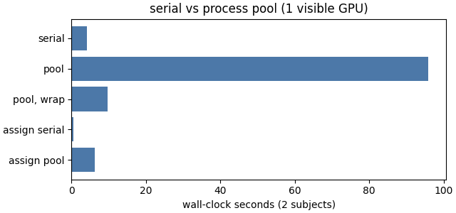
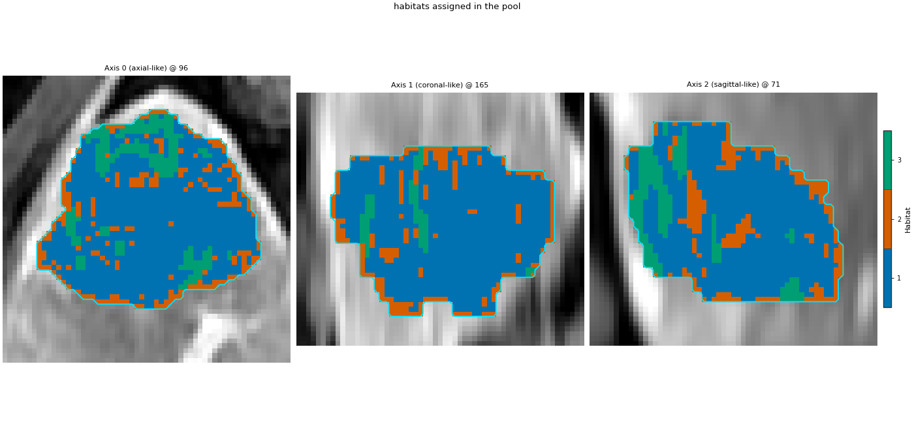

Note
Go to the end to download the full example code.
Running subjects in separate processes
RunPolicy(workers=2, backend="process") builds a
ProcessPoolBackend: each subject is sent to one
of two worker processes. This page runs the same texture extraction and
habitat assignment serially and in the pool, checks that the results
agree, and times both.
What a pool buys depends on where the work runs:
CPU-only machine: each worker uses its own cores, so subjects run side by side.
One GPU: only worker 0 gets the card. The other workers are pinned to CPU PyRadiomics so they do not fight over GPU memory, and a CPU worker is far slower than the GPU.
HABIT_GPU_OVERSUBSCRIBE=wraplets every worker share the one card instead.Several GPUs: one worker per card, Running a cohort on several GPUs.
Every pool start pays process spawn and imports (a few seconds). With two small subjects that overhead is larger than the work, so the numbers below are about correctness and cost, not about a speed-up.
On Windows a process pool must be started under
if __name__ == "__main__": (a spawned worker re-imports this file).
The whole run is therefore one guarded block that can be copied as is.
Set up the cohort, the extractor, and the pool
Building the backend does not start workers; map does. The
extractor has no cache here, so both backends really compute texture.
The device is left at "auto": CUDA when available, otherwise CPU.
sphinx_gallery_thumbnail_number = 2
import os
import time
from pathlib import Path
import matplotlib.pyplot as plt
import numpy as np
from habit.contracts import cohort_from_directory
from habit.datasets import fetch_demo
from habit.execution import SerialBackend, backend_from_policy
from habit.feature_preprocessing import SubjectPreprocessingChain, ZScoreScaling
from habit.habitat_model import KMeansHabitatModelFitter
from habit.pipeline import voxel_units
from habit.spec import RunPolicy
from habit.viz import plot_habitat_overlay
from habit.voxel_features import VoxelRadiomicsFeatures
# Change DATA / MODALITIES / ROI to your preprocessed layout.
DATA = fetch_demo()
MODALITIES = ("LAP",)
ROI = "LAP"
cohort = cohort_from_directory(DATA, modalities=MODALITIES, roi=ROI)[:2]
print(cohort)
Path("out").mkdir(exist_ok=True)
# A light workload (radius 1, three GLCM features) keeps the CPU worker short.
texture = VoxelRadiomicsFeatures(
modalities=list(MODALITIES),
roi=ROI,
kernel_radius=1,
params={
"imageType": {"Original": {}},
"featureClass": {"glcm": ["Contrast", "Correlation", "JointEntropy"]},
"setting": {"binWidth": 12},
},
)
policy = RunPolicy(
workers=2,
backend="process",
parallel_mode="persistent",
auto_retry_rounds=0,
)
def by_subject(results: list) -> dict:
"""Key results by subject id: the pool yields subjects as they finish."""
return {result.subject_id: result for result in results}
HABIT demo data (cached)
DATA (preprocessed root): C:\Users\dongm\.habit_data\demo-data-v1\preprocessed
On-disk inventory of this folder:
subjects (5): subj001, subj002, subj003, subj004, subj005
image series: LAP, PVP, delay_3min, pre_contrast
mask keys: LAP, PVP, delay_3min, pre_contrast
example image: images/subj001/delay_3min/WATER__BH_Ax_LAVA_Flex_3min_Series0012.nrrd
example mask: masks/subj001/delay_3min/WATER__BH_Ax_LAVA_Flex_10min_Series0017_mask.nrrd
Your own data must use the same folder tree (change IDs / series names):
DATA/
images/<subject_id>/<modality>/<one image file>
masks/<subject_id>/<roi>/<one mask file>
Then load it with the same call the demos use:
cohort = cohort_from_directory(DATA, modalities=("LAP",), roi="LAP")
Swap DATA / modalities / roi to match your tree. Mask key is often the
same as one image series (here LAP).
Cohort(2 subjects [subj001, subj002])
Run serially and in the pool, then compare
texture serially, then in the pool (default single-GPU pinning), then in the pool with
HABIT_GPU_OVERSUBSCRIBE=wrap; each is timed;the largest absolute difference between the serial and pool fields;
z-score and fit once in this process (fitting sees every subject);
assignment serially and in the pool; the label maps must be identical.
The pool returns subjects in the order they finish, not the input order,
so results are matched by subject_id (by_subject above).
On a one-GPU machine the default pool computes the second subject on the CPU, so step 2 is also a CPU-versus-GPU check. The documented tolerance between the two paths is in Voxel texture feature maps.
if __name__ == "__main__":
try:
import torch
n_gpus = torch.cuda.device_count()
except ImportError:
n_gpus = 0
print("visible CUDA devices:", n_gpus, "| CPU cores:", os.cpu_count())
serial = SerialBackend()
timings = {}
start = time.perf_counter()
fields_serial = [slot.result() for slot in serial.map(texture, cohort)]
timings["serial"] = time.perf_counter() - start
start = time.perf_counter()
fields_pool = by_subject(slot.result() for slot in backend_from_policy(policy).map(texture, cohort))
timings["pool"] = time.perf_counter() - start
# Workers read this variable when they start, so set it before the map.
os.environ["HABIT_GPU_OVERSUBSCRIBE"] = "wrap"
try:
start = time.perf_counter()
fields_wrap = by_subject(slot.result() for slot in backend_from_policy(policy).map(texture, cohort))
timings["pool, wrap"] = time.perf_counter() - start
finally:
del os.environ["HABIT_GPU_OVERSUBSCRIBE"]
for name, seconds in timings.items():
print(f"texture {name:>11}: {seconds:6.1f} s")
for a in fields_serial:
b, c = fields_pool[a.subject_id], fields_wrap[a.subject_id]
print(
f"{a.subject_id}: max |serial - pool| = {np.abs(a.values - b.values).max():.2e}, "
f"max |serial - pool, wrap| = {np.abs(a.values - c.values).max():.2e}"
)
zscore = SubjectPreprocessingChain([ZScoreScaling(across_features=False)])
units = [
voxel_units(
field.with_feature_frame(
zscore(field.feature_frame()),
produced_by="subject_feature_preprocessor",
spec_fingerprint=zscore.spec.fingerprint(),
)
)
for field in fields_serial
]
fitter = KMeansHabitatModelFitter(n_habitats=3, n_init=3)
fitter.set_random_state(0)
model = fitter.fit(units, cohort=cohort)
start = time.perf_counter()
maps_serial = [slot.result() for slot in serial.map(model.assigner(), units)]
timings["assign serial"] = time.perf_counter() - start
start = time.perf_counter()
maps_pool = by_subject(slot.result() for slot in backend_from_policy(policy).map(model.assigner(), units))
timings["assign pool"] = time.perf_counter() - start
for a in maps_serial:
same = np.array_equal(a.label_array, maps_pool[a.subject_id].label_array)
print(f"{a.subject_id}: serial labels == pool labels: {same}")
print(f"assign serial {timings['assign serial']:.1f} s, pool {timings['assign pool']:.1f} s")
fig, ax = plt.subplots(figsize=(6.4, 3.0), constrained_layout=True)
ax.barh(list(timings), list(timings.values()), color="#4C78A8")
ax.invert_yaxis()
ax.set_xlabel("wall-clock seconds (2 subjects)")
ax.set_title(f"serial vs process pool ({n_gpus} visible GPU)")
fig.savefig("out/process_pool_timing.png", dpi=150, bbox_inches="tight")
plt.show()
fig_map = plot_habitat_overlay(
cohort[0].image(ROI),
maps_pool[cohort[0].subject_id],
title="habitats assigned in the pool",
crop_to="labels",
)
fig_map.savefig("out/process_pool_habitats.png", dpi=150, bbox_inches="tight")
plt.show()


visible CUDA devices: 1 | CPU cores: 16
voxel_radiomics: glcm batch 1/35 0.411s peak=1MiB
voxel_radiomics: glcm batch 2/35 0.018s peak=2MiB
voxel_radiomics: glcm batch 3/35 0.017s peak=3MiB
voxel_radiomics: glcm batch 4/35 0.017s peak=4MiB
voxel_radiomics: glcm batch 5/35 0.017s peak=4MiB
voxel_radiomics: glcm batch 6/35 0.017s peak=5MiB
voxel_radiomics: glcm batch 7/35 0.018s peak=6MiB
voxel_radiomics: glcm batch 8/35 0.017s peak=7MiB
voxel_radiomics: glcm batch 9/35 0.017s peak=8MiB
voxel_radiomics: glcm batch 10/35 0.017s peak=9MiB
voxel_radiomics: glcm batch 11/35 0.018s peak=10MiB
voxel_radiomics: glcm batch 12/35 0.018s peak=11MiB
voxel_radiomics: glcm batch 13/35 0.017s peak=12MiB
voxel_radiomics: glcm batch 14/35 0.021s peak=13MiB
voxel_radiomics: glcm batch 15/35 0.021s peak=13MiB
voxel_radiomics: glcm batch 16/35 0.022s peak=14MiB
voxel_radiomics: glcm batch 17/35 0.021s peak=15MiB
voxel_radiomics: glcm batch 18/35 0.020s peak=16MiB
voxel_radiomics: glcm batch 19/35 0.021s peak=17MiB
voxel_radiomics: glcm batch 20/35 0.017s peak=18MiB
voxel_radiomics: glcm batch 21/35 0.018s peak=19MiB
voxel_radiomics: glcm batch 22/35 0.019s peak=20MiB
voxel_radiomics: glcm batch 23/35 0.020s peak=21MiB
voxel_radiomics: glcm batch 24/35 0.019s peak=22MiB
voxel_radiomics: glcm batch 25/35 0.017s peak=22MiB
voxel_radiomics: glcm batch 26/35 0.016s peak=23MiB
voxel_radiomics: glcm batch 27/35 0.016s peak=24MiB
voxel_radiomics: glcm batch 28/35 0.024s peak=25MiB
voxel_radiomics: glcm batch 29/35 0.021s peak=26MiB
voxel_radiomics: glcm batch 30/35 0.022s peak=27MiB
voxel_radiomics: glcm batch 31/35 0.018s peak=28MiB
voxel_radiomics: glcm batch 32/35 0.019s peak=29MiB
voxel_radiomics: glcm batch 33/35 0.017s peak=30MiB
voxel_radiomics: glcm batch 34/35 0.016s peak=31MiB
voxel_radiomics: glcm batch 35/35 0.015s peak=31MiB
voxel_radiomics: glcm batch 1/10 0.023s peak=32MiB
voxel_radiomics: glcm batch 2/10 0.017s peak=32MiB
voxel_radiomics: glcm batch 3/10 0.018s peak=32MiB
voxel_radiomics: glcm batch 4/10 0.017s peak=32MiB
voxel_radiomics: glcm batch 5/10 0.017s peak=33MiB
voxel_radiomics: glcm batch 6/10 0.017s peak=33MiB
voxel_radiomics: glcm batch 7/10 0.017s peak=33MiB
voxel_radiomics: glcm batch 8/10 0.017s peak=33MiB
voxel_radiomics: glcm batch 9/10 0.017s peak=34MiB
voxel_radiomics: glcm batch 10/10 0.018s peak=34MiB
texture serial: 4.2 s
texture pool: 95.8 s
texture pool, wrap: 9.8 s
subj001: max |serial - pool| = 0.00e+00, max |serial - pool, wrap| = 0.00e+00
subj002: max |serial - pool| = 0.00e+00, max |serial - pool, wrap| = 0.00e+00
subj001: serial labels == pool labels: True
subj002: serial labels == pool labels: True
assign serial 0.5 s, pool 6.3 s
F:\work\habit_project\habit\viz\habitat_overlay.py:801: UserWarning: Display geometry conflict: image/anatomy direction does not match mask/label direction. Using the mask/label direction so coronal/sagittal superior-up follows the labelled anatomy. Pass direction= to override.
resolved_direction, resolved_spacing = resolve_display_geometry(
Total running time of the script: (2 minutes 0.093 seconds)